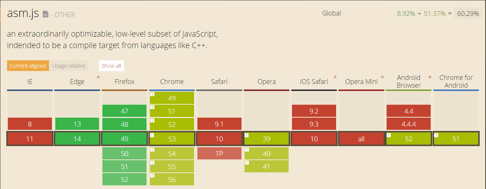
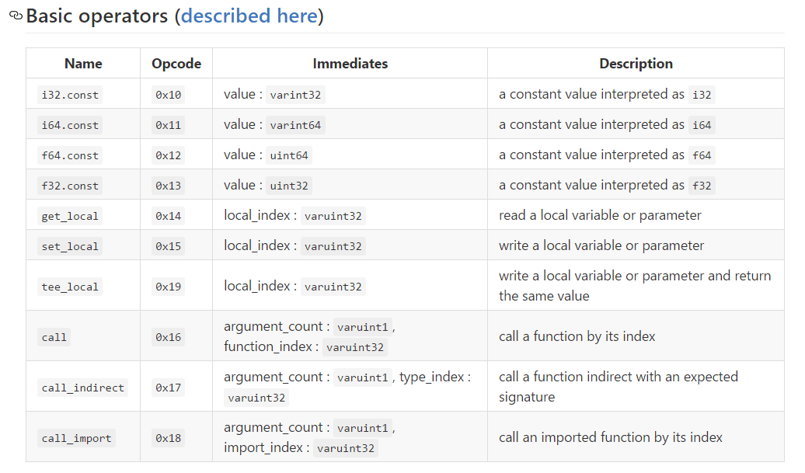

WebAssembly
By Cody
23/09/2016
C/C++ Vs JavaScript
C/C++: Preprocessor > Compiler > Assembler > Linker
JavaScript: Lexer > Parser > Translator > Interpreter
Things that slow down JavaScript
- Boxing
- Automated garbage collection
- JIT compilation and runtime type checks
- Flexible memory layout
How about ignoring these steps ?
Yes! AOT compilation!
BUT! How?
Here comes asm.js
An extraordinarily optimizable, low-level subset of JavaScript.
Game / Video / Image decoders
Works to make Web run like Native
- NPAPI(1995-2015) - PDF documents
- ActiveX(1996-2015) - Document embedding
- Shockwave/Flash(1996-?) - Animations
- Java Applets(1996-?) - Applications
- JavaScript performance wars(2008)
- Native Client / Portable Native Client(2008/2013)
- Emscripten / asm.js(2010/2013)
- WebAssmbly(2015)
DEMO...
function DiagModule(stdlib) {
"use asm";
var sqrt = stdlib.Math.sqrt;
function square(x) {
x = +x;
return +(x*x);
}
function diag(x, y) {
x = +x;
y = +y;
return +sqrt(square(x) + square(y));
}
return { diag: diag };
}
// Browsers: this === window
var fast = DiagModule(this); // link the module
console.log(fast.diag(3, 4)); // 5
Module structure
function MyAsmModule(stdlib, foreign, heap) {
"use asm"; // marks this function as an asm.js module
// module body:
function f1(...) { ... }
function f2(...) { ... }
// ...
return {
export1: f1,
export2: f2,
// ...
};
}
stdlib: a standard library object, providing access to (a subset of) the standard library.
foreign: a foreign function interface (FFI) providing access to arbitrary external JavaScript functions.
heap: a heap buffer, an instance of ArrayBuffer that acts as the asm.js heap.
Standard library
- Global double values: Infinity, NaN
- Double functions: Math.ceil, Math.floor, Math.sqrt ...
- Integer or double function: Math.abs ...
- Integer function (ES6): Math.imul (integer multiplication)
- Double values: Math.E, Math.LOG2E, Math.PI ...
Static typing
Via its initializer
var a = 0; // a has type int
var b = 0.0; // b has type double
Via type annotations
function foo(x, y) {
var x = x|0; // x has type int
var y = +y; // y has type double
return +(x * y); // function returns a double
}
Advantages of asm.js
- Interacts well with JavaScript (not like NaCl/PNaCl)
- Backward compatible with all existing JavaScript engines
But it's impossible for hand writing in complex projects
In the real world, it's like this:
Tips: Emscripten does all these.
Example...
#include <stdio.h>
int fib(int x) {
if (x < 2) {
return 1;
} else {
return fib(x - 1) + fib(x - 2);
}
}
int main() {
int result = fib(45);
printf("%d\n", result);
return 1;
}
./emcc -O1 -s ASM_JS=1 ./hello_world.cpp
node ./a.out.js
Build emscripten by self...
Can I use
Languages to languages
CoffeeScript
divisible = 3
divisibleReporter = (lastFound, nextDivisible) ->
"Found: #{lastFound}, Next: #{nextDivisible}"
divisibleKeeper = ((divisible) ->
lastFound = 0
nextDivisible = divisible
(number) ->
if (number >= nextDivisible)
nextDivisible = (Math.floor(number/divisible) + 1) * divisible
lastFound = Math.floor(number/divisible) * divisible
console.log divisibleReporter(lastFound, nextDivisible)
)(divisible);
for n in [1..100]
divisibleKeeper(n)
TypeScript
var divisible = 3;
var divisibleReporter = function(lastFound:number, nextDivisible:number){
return "Found: " + lastFound + ", Next: " + nextDivisible;
};
var divisibleKeeper = (function(divisible:number) {
var lastFound = 0;
var nextDivisible = divisible;
return function(number:number) {
if (number >= nextDivisible) {
nextDivisible = (Math.floor(number / divisible) + 1) * divisible;
lastFound = Math.floor(number / divisible) * divisible;
console.log(divisibleReporter(lastFound, nextDivisible));
}
};
})(divisible);
for (var i = 1; i <= 100; ++i) {
divisibleKeeper(i);
}
Dart
int divisible = 3;
String divisibleReporter(int lastFound, int nextDivisible) => "Found: ${lastFound}, Next: ${nextDivisible}";
var divisibleKeeper = ((int divisible) {
int lastFound = 0;
int nextDivisible = divisible;
return (int number){
if (number >= nextDivisible) {
nextDivisible = ((number/divisible).floor() + 1) * divisible;
lastFound = (number/divisible).floor() * divisible;
print(divisibleReporter(lastFound, nextDivisible));
}
};
})(divisible);
void main() {
for (var i = 0; i < 100; i++) {
divisibleKeeper(i);
}
}
GWT
public class ButtonExample implements EntryPoint {
public void onModuleLoad() {
// Make a new button that does something when you click it.
Button b = new Button("Jump!", new ClickHandler() {
public void onClick(ClickEvent event) {
Window.alert("How high?");
}
});
// Add it to the root panel.
RootPanel.get().add(b);
}
}
Why asm.js is not enough?
Currently ONLY Firefox and Edge support this
The asm.js is still JS, ONLY saving time during interpretion
Hard to debug
WebAssembly
WebAssembly or wasm is a new portable, size- and load-time-efficient format suitable for compilation to the web.
others said...
WebAssembly is (roughly) a binary format for delivering asm.js code.
Features
- Efficient and fast
- Safe
- Open and debggable
- Part of the open web platform
WASM does not replace JS

Text Format
The text format is equivalent and isomorphic to the binary format.
Binary Encoding
C++ > Emscripten > asm.js
asm.js > ... > WebAssembly
Here comes Binaryen
The Binaryen shell, which can load a WebAssembly module, transform it, execute it in an interpreter, print it, etc.
Tool pack: asm2wasm / wasm2asm / s2wasm / wasm.js
The End
Thank you :-)
References
- http://www.2ality.com/2015/06/web-assembly.html
- https://medium.com/javascript-scene/what-is-webassembly-the-dawn-of-a-new-era-61256ec5a8f6#.5t42aln7o
- https://medium.com/javascript-scene/why-we-need-webassembly-an-interview-with-brendan-eich-7fb2a60b0723#.7d4tbmm9e
- http://www.2ality.com/2013/02/asm-js.html
- http://www.html5rocks.com/en/tutorials/developertools/sourcemaps/
- http://kripken.github.io/mloc_emscripten_talk
- http://llvm.org/
- http://asmjs.org/spec/latest/
- http://asmjs.org/faq.html
- http://www.2ality.com/2013/02/asm-js.html
- http://kripken.github.io/emscripten-site/
- https://www.sitepoint.com/understanding-asm-js/
- https://news.ycombinator.com/item?id=9071235
- http://mrale.ph/blog/2013/03/28/why-asmjs-bothers-me.html
- http://jlongster.com/Compiling-LLJS-to-asm.js,-Now-Available-
- https://github.com/petkaantonov/bluebird/wiki/Optimization-killers
- https://hacks.mozilla.org/2015/12/compiling-to-webassembly-its-happening/
- https://kripken.github.io/talks/wasm.html#/
- https://hacks.mozilla.org/2016/03/a-webassembly-milestone/
- https://webkit.org/status/#specification-webassembly
- https://github.com/WebAssembly/design/blob/master/BinaryEncoding.md#module-structure
- https://blog.mozilla.org/luke/2014/01/14/asm-js-aot-compilation-and-startup-performance/#jit
- https://en.wikipedia.org/wiki/Just-in-time_compilation
- http://gotocon.com/dl/goto-cph-2015/slides/NickBray_WebAssembly.pdf
- https://cdn.int64ago.org/5d3l4mep2408zvvj66iggb9.pdf
- https://www.infoq.com/news/2015/06/webassembly-wasm
- http://128bitstudios.com/2013/08/11/a-quick-look-at-coffeescript-typescript-and-dart/